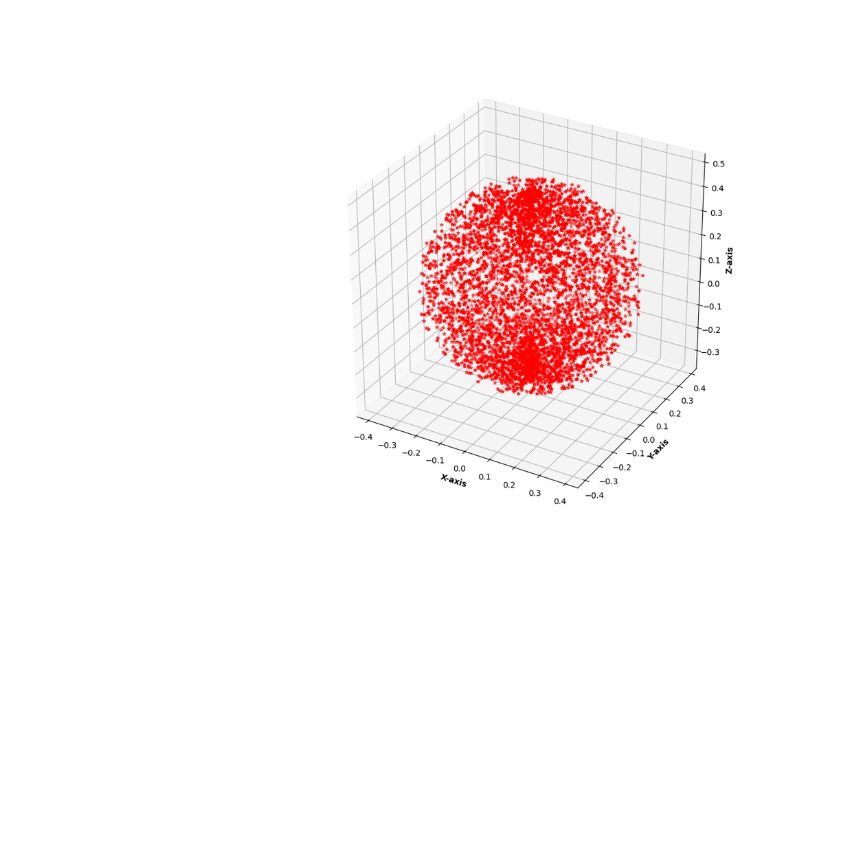
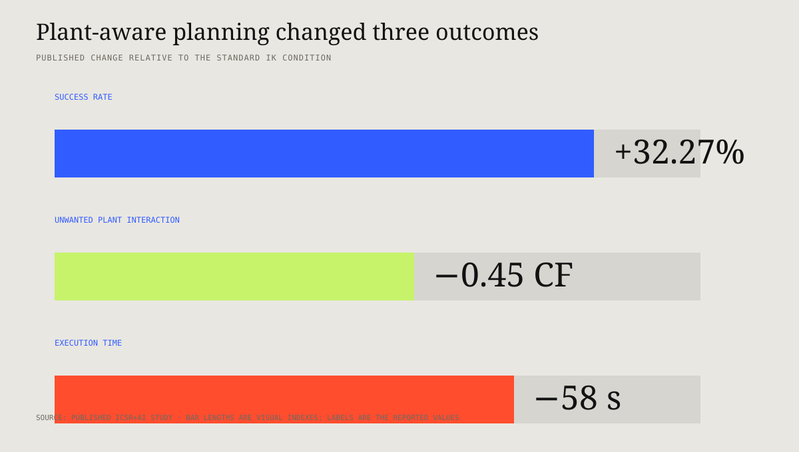

No clean collision primitive
Leaves overlap, bend, and change appearance. A conservative box blocks useful work; an optimistic box permits harmful contact.
Plant–robot interaction · ICSR+AI 2025
How can a manipulator reach weeds while treating the crop—not the robot—as the center of the planning problem?
This work combines image-based plant geometry recovery, a feedforward model, a human-inspired workspace construction strategy, hybrid inverse kinematics, adaptive control, and end-effector co-design. The method was evaluated in Gazebo and on a physical mobile manipulator in a greenhouse-style setup.
Abstract
A plant is not a rigid obstacle with a stable collision box. Its root, stem, leaves, and reachable free space must be inferred—and the task plan must change with that geometry before the robot begins to move.
Problem formulation
In plant-centered work, the robot must enter a constrained canopy to reach a weed while avoiding contact that can damage nearby crop leaves or stems. Standard IK answers whether a pose is reachable; it does not decide whether the path is sensible for the plant.
Leaves overlap, bend, and change appearance. A conservative box blocks useful work; an optimistic box permits harmful contact.
Touching the weed is required. Touching the crop is undesirable. The task needs semantic geometry, not occupancy alone.
A candidate must balance target access, crop-contact risk, motion duration, and the end-effector’s approach needs.
Method
The planner constructs a plant-aware action region before selecting the manipulator pose. This reverses the usual order in which IK finds a solution first and safety logic rejects it afterward.




Channel-based segmentation and elliptical morphological closing recover a contiguous plant region from RGB observations.
The system infers root/stem location, leaf-area spread, plant-bed layout, and the region in which a manipulation approach should be avoided.
A learned component maps visual plant features to quantities required by planning, connecting perception to a compact geometric task representation.
The planning region is organized around the crop and target, inspired by the structured placement used when making flower carpets, rather than sampling the robot’s entire reachable space indiscriminately.
Analytical reachability and learned/task-specific selection work together to identify a pose that is both executable and better aligned with plant-contact constraints.
The motion terminates in a co-designed end effector able to mechanically remove the weed and support targeted spray or watering operations.
Hardware–software co-design
Mechanical plucking, position control, contact limitation, and targeted fluid delivery were treated as one system rather than independent modules.
The gripper was co-designed with a mechanical engineer for plant-centered operations. It combines mechanical removal with targeted spray/water capability so the same tool can perform different local treatments after reaching the plant.
A separate open implementation uses a Dynamixel actuator in current-based position mode. PID position error determines commanded current subject to saturation and minimum actuation thresholds, while a near-target state changes the current command.
Published results
The paper compares the proposed hybrid IK task planner with a standard IK solver in the reported simulation and physical evaluation conditions.

| Evaluation dimension | Reported change | Why it matters | Boundary |
|---|---|---|---|
| Task success | 32.27% increase relative to standard IK | Plant-aware candidate selection found useful task poses more often. | Relative change under the paper’s test setup; not a universal success rate. |
| Plant interaction | 0.45 lower average Contact Factor | The plan reduced undesirable crop interactions while reaching the target. | Metric definition and scene distribution follow the paper. |
| Execution time | 58 s lower on average | Constraining the task-relevant search space reduced time spent reaching workable poses. | Hardware, planner, and task complexity are setup-specific. |
Contribution and citation
The project evolved through physical autonomous-weeding development, controller prototyping, end-effector co-design, simulation experiments, and the published hybrid-IK evaluation.
I developed the end-to-end plant-aware manipulation system and led the published method.
My work covered the vision pipeline, plant-geometry representation, hybrid IK/task-planning formulation, robot integration, controller development, simulation and physical evaluation, and co-design of the task-specific end effector. Abhra Roy Chowdhury is credited as co-author and research collaborator.
Open evidence gap. A modern follow-up should publish trial-level outcomes, contact events, planning times, plant-species metadata, segmentation masks, and failure taxonomy—not only aggregate averages.
Tharun, V. P., and A. R. Chowdhury. “Vision Based Hybrid IK Task Planning with Feedforward Neural Network for Collaborative Plant-Robot Interaction in Precision Farming.” In Social Robotics + AI, LNAI 16132, pp. 253–267. Springer, 2026. DOI: 10.1007/978-981-95-2382-5_18.